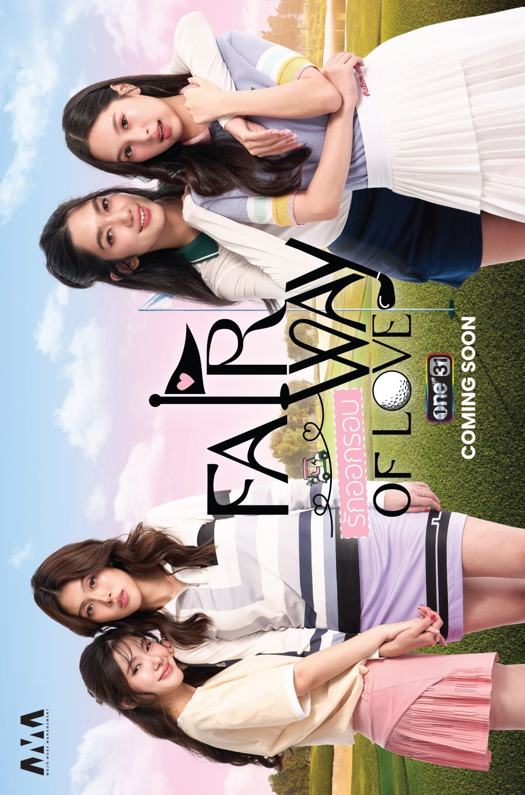

Official promotional artwork. Rights remain with the rights holder.
Recorded regular schedule finished
Fairway of Love
IngCartoon + MinagiBam
Thailand's first golf-themed GL. Two-couple story. 8 episodes plus 2 specials.
Where to watch
Start with the official show page.
Watch on WeTV ↗WeTV series listing; no uncut edition is established by this record.
Official listing reviewed 2026-10-22. Playback varies by country.
Final scheduled episode: Sun 25 Oct · 10:30 PM ICT
Regular episodes recorded; see the unresolved platform count below.
ICT is UTC+7. This page does not convert to your local time.
Before you press play
A listing is not a country guarantee.
WeTV labels this route Original Ver. and All 10 EPs. The Tracker records eight regular episodes plus two specials; their platform breakdown is unresolved. Country playback, current price and subtitles not tested.
What is still unresolved?
Episode count and specials
Do not assume the 10-item platform label means 10 regular weekly episodes. Keep the eight dated regular episodes pending a studio or platform breakdown of the two specials.
Episode times follow the recorded Thai broadcast schedule; the streaming edition can appear later. Source review is separate from a playback test. See the full Tracker record and evidence.
Sterling’s verdict · Personal opinion
Sterling’s take
For me, the casting is where this show falls apart. […] Ing Tanatcha deserves a word of her own. There’s an assurance to her performance that makes me want to see more of her.
From the 19 October 2026 newsletter. Rankings and reactions belong to that issue.
Read the complete issue →The episode schedule
Times shown are the recorded Thailand schedule. “Scheduled” does not confirm that a stream is available.
- EP 1Scheduled date passed
- EP 2Scheduled date passed
- EP 3Scheduled date passed
- EP 4Scheduled date passed
- EP 5Scheduled date passed
- EP 6Scheduled date passed
- EP 7Scheduled date passed
- EP 8 · Last recorded regular episodeScheduled date passed
Sources and checks
The viewing button above is the official title listing, reviewed 2026-10-22. These records explain the schedule and its limits.
- Official artwork replacement: Mojo Muse Management video thumbnail, uploader and image checkedChecked 2026-10-29
- Official One Last Swing special teaser published 29 October. This is not a full special release; its date and the platform regular/special breakdown remain unresolved.Checked 2026-10-29
- one31 official episode 7 highlight confirms the episode aired on 18 Oct 2026Checked 2026-10-19
- one31 official same-day episode 7 trailer confirms the 18 Oct 2026 broadcast remains on scheduleChecked 2026-10-18
- Mojo Muse Management official episode 7 teaser confirms the Sunday release remains on scheduleChecked 2026-10-16
Read our corrections if a listing or episode count has changed.
Free every Monday
The viewing link gets you started.
The Monday email brings the week together.
Sterling’s Top Six, essays, Dao’s films and what’s coming next. No payment or app required.
Get the free Monday newsletterAfter signing up, check your inbox or spam and click the confirmation link.